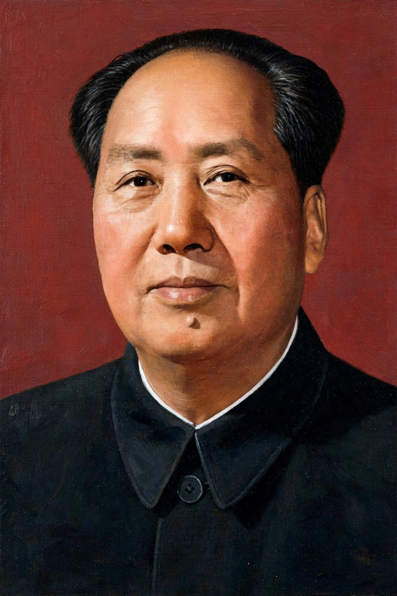

Mao Zedong
From Wikipedia, the free encyclopedia
Mao Zedong (26 December 1893 – 9 September 1976) was a Chinese communist revolutionary and political theorist who founded the People's Republic of China (PRC) and led it from its establishment in 1949 until his death. Chairman of the Chinese Communist Party (CCP) from the 1940s, he is remembered as the central figure of modern China and one of the most influential — and controversial — political leaders of the twentieth century.

Mao Zedong (1893–1976), founding leader of the People's Republic of China.
Born in Shaoshan, Hunan, to a prosperous peasant family, Mao helped found the CCP in 1921, built a rural revolutionary strategy after the party's near-destruction in 1927, and led the Red Army on the Long March (1934–35), emerging as the party's paramount leader. After the war against Japan and renewed civil war against the Kuomintang, he proclaimed the PRC from Tiananmen on 1 October 1949.
Rule and campaigns
Mao's rule transformed China: land reform and the suppression of counter-revolutionaries (with large numbers killed), industrialisation on the Soviet model, the Hundred Flowers and Anti-Rightist campaigns (1956–57), the Great Leap Forward (1958–62) — whose collectivisation and policy errors produced a famine in which tens of millions died, the largest famine in history — and the Cultural Revolution (1966–76), a mass mobilisation against “capitalist roaders” and old culture that brought persecution, violence and chaos before the army restored order. Foreign policy saw the Korean War intervention, the Sino-Soviet split, and the opening to the United States symbolised by President Nixon's 1972 visit.
Legacy
The CCP's official verdict (1981) holds that Mao's contributions to the revolution were primary and his later errors secondary — the “70 per cent achievements, 30 per cent mistakes” formula — and his portrait hangs on Tiananmen and his likeness appears on the currency. Historians outside China generally weigh the famine and Cultural Revolution far more heavily; estimates of unnatural deaths under his rule vary widely, and debate continues between assessments stressing national unification, literacy, public health and life expectancy gains, and those stressing catastrophe. Mao's writings and doctrine (Mao Zedong Thought) remain part of the CCP's official ideology.
See also
Communist Party of China · People's Republic of China · Kuomintang · Cult of personality · Stalinism